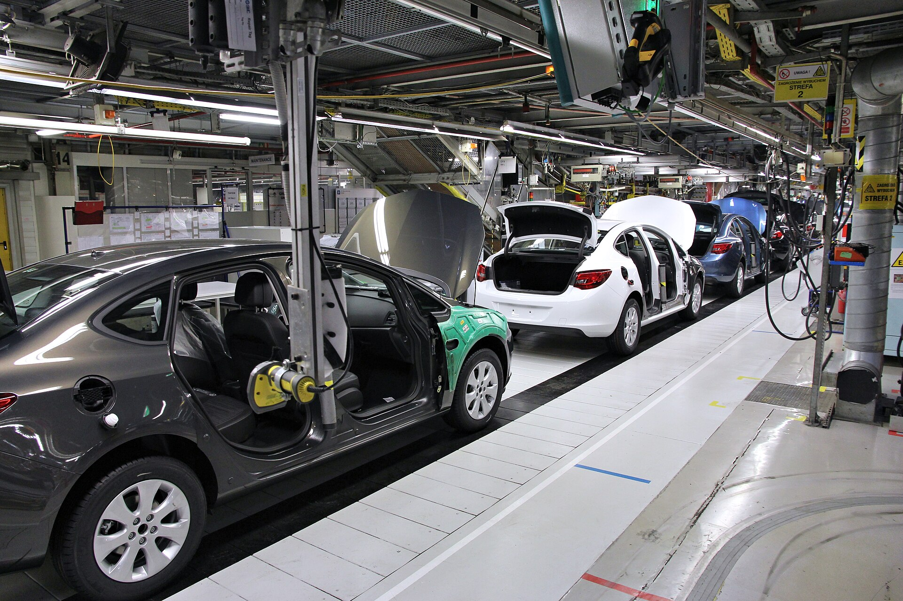

VISISOP
总装 A 线
白班 08:00–16:00
当班班长
12:42

这里没看清
2 号工位 · 座椅锁付
1920×1080
12:36:20
·
演示画面，不是真实照片
需要你确认
右前螺栓装好了吗？
系统没看清这颗螺栓。你看一眼画面，告诉我结果就行。
工位
02 座椅锁付
等待
6 分钟
这是第
3
个待处理
这一步的标准
右前螺栓锁付到位，
露出 2–3 扣
，垫片贴平。
选择结果
装好了
按装好的记录，继续下一件
›
没装好
记录下来，通知返工
›
看大图
调更早的画面
稍后处理
处理后还有
1
件待确认
看队列 ›
整条产线
01 前围装配
正常 · 已进行 6 分钟
02 座椅锁付
待你确认 · 6 分钟
03 螺栓拧紧
正常 · 已进行 3 分钟
04 终检下线
离线 · 12 分钟
看整条线 ›